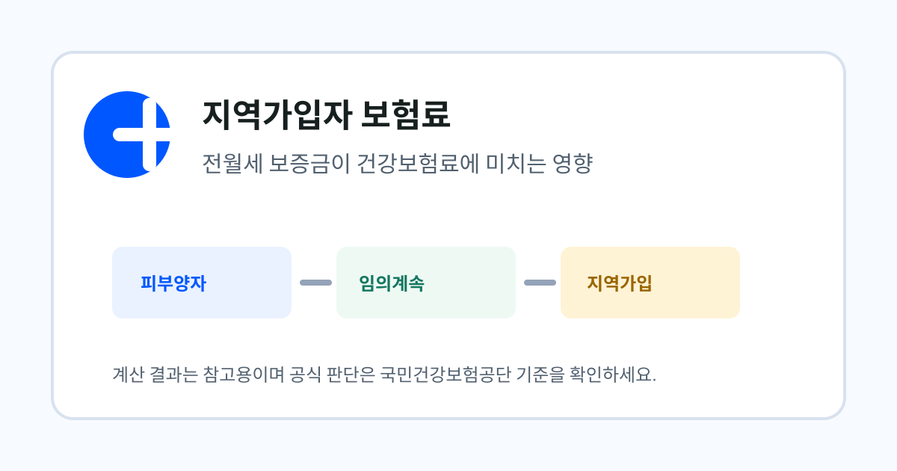
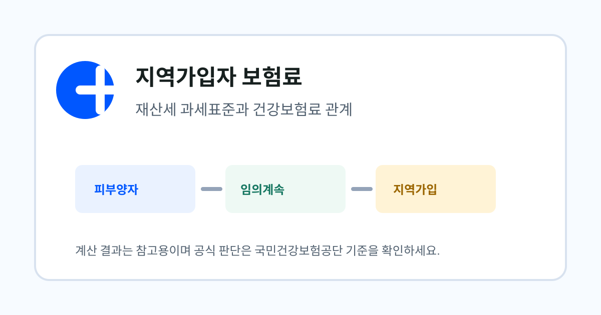
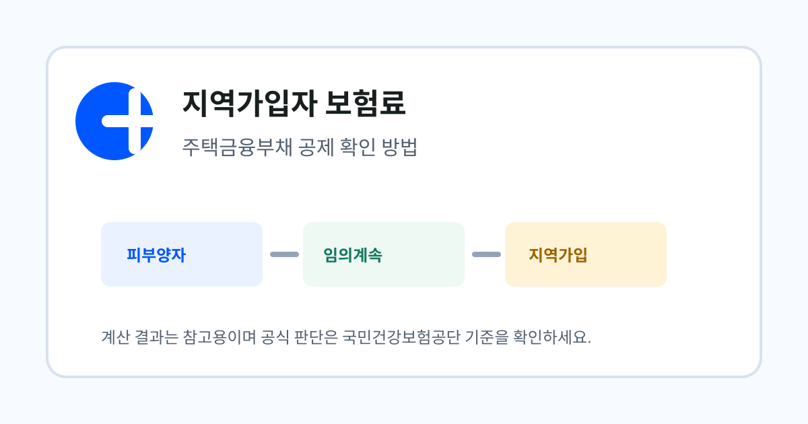
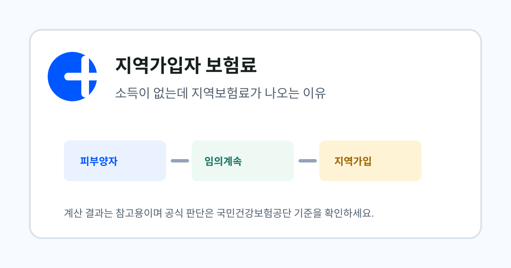

먼저 확인할 상황
- 소득 없는 퇴사자의 고지 원인 확인
- 전월세 보증금 영향 확인
- 재산 과세표준 자료 준비
Category
소득, 재산, 전월세가 지역가입자 건강보험료에 어떻게 연결되는지 설명합니다.
퇴사 후 지역가입자로 전환될 가능성이 있거나, 소득이 없는데도 보험료가 나올까 걱정하는 사람을 위한 묶음입니다.
소득금액, 재산세 과세표준, 전월세 자료를 분리해서 확인합니다. 자동차 부과 폐지, 재산 기본공제, 주택금융부채 공제처럼 최근 개편으로 달라진 항목도 함께 봅니다.
시세, 통장 잔액, 월급 총액을 그대로 넣으면 실제 산정 기준과 달라질 수 있습니다. 공단이 활용하는 과세자료 기준으로 다시 확인해야 합니다.
아래 자료를 기준으로 글의 계산 기준과 주의 문구를 검토했습니다. 개인별 금액과 자격 판정은 국민건강보험공단의 최신 자료 반영과 심사 결과가 우선합니다.
작성: 건보계산기 편집팀 · 최종 검토: 2026-06-24
 지역가입자 보험료
지역가입자 보험료
지역가입자 건강보험료에서 어떤 소득이 반영되는지 퇴사자 관점으로 설명합니다.
자세히 보기
지역가입자 보험료전월세 보증금과 월세가 지역가입자 보험료 판단에 연결될 수 있는 이유를 정리합니다.
자세히 보기
지역가입자 보험료지역가입자 보험료에서 시세가 아니라 과세표준을 확인해야 하는 이유를 설명합니다.
자세히 보기
지역가입자 보험료주택 관련 부채가 지역가입자 보험료에 영향을 줄 수 있는지 확인하는 흐름을 정리합니다.
자세히 보기
지역가입자 보험료퇴사 후 소득이 없어도 지역가입자 보험료가 발생할 수 있는 이유를 설명합니다.
자세히 보기